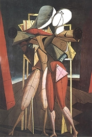

Dalí: Stálost paměti

Miró: Harlekýnův karneval

Chirico: Hektor a Andromaché

Magritte: Hlas větru
|
SURREALISMUS
Označení surrealismus [sirealizmus] použil poprvé Guillaume Apollinaire v předmluvě ke svému dramatu Prsy Tiresiovy: Když chtěl člověk napodobit chůzi, vynalezl kolo, které se vůbec nepodobá noze. Takto dospěl k surrealismu, aniž věděl jak. Můžeme ho přeložit jako nadrealismus. Roku 1924 se k němu vrátila surrealistická skupina, kterou založil André Breton. Ten získal pro členství většinu pařížských dadaistů.
Surrealisté zdůrazňovali, že nejde o nový umělecký směr, ale způsob života. Velký vliv na ně měla Freudova psychoanalýza. Pustili se do „výzkumů“ lidské psychiky, nevědomí, snů, sexuality a šílenství. Využívali původně psychoanalytickou metodu automatického psaní, zaznamenávali si vlastní sny a pokoušeli se je vykládat, byli velmi otevření v oblasti sexuality, různých obsesí a šílených představ. Surrealistickou estetiku zásadně ovlivnily Zpěvy Maldororovy, jejichž autorem byl zapomenutý prokletý básník Comte de Lautréamont.
Surrealisté hráli kolektivní hry. Každý měl například napsat určité slovo, aniž by věděl, co napadlo jeho předchůdce. První věta, kterou takto vytvořili, zněla Vybraná mrtvola bude pít mladé víno. Kromě kolektivních textů vytvářeli i společné obrazy.
Surrealisté se hlásili ke komunismu, marxismu a anarchismu. Vstoupili do komunistické strany, ale protože odmítali stalinismus stejně jako fašismus a nacismus, byli z ní vyloučeni. Totalitní režimy navíc začaly surrealisty pronásledovat.
K nejvýraznějším surrealistickým spisovatelům patřili vedle Bretona též Philippe Soupault [supo], Paul Éluard, Benjamin Péret, Louis Aragon nebo Robert Desnos, okrajově též Tristan Tzara, Raymond Queneau či Jacques Prévert.
Ve výtvarném umění se surrealismus vyznačuje různorodostí autorských stylů, což je patrné z děl umělců, jakými byli Španělé Salvador Dalí a Joan Miró, Francouzi Yves Tanguy a René Magritte, Němec Max Ernst nebo Ital Giorgio de Chirico [džordžo de kíriko]. Surrealisté si oblíbili koláž, asambláž a tvorbu podivných objektů. Obdobou automatického psaní byla automatická kresba. Členem skupiny se rovněž stal španělský filmař Luis Buñuel nebo francouzský dramatik Antonin Artaud.
Surrealismus výrazně ovlivnil umění 20. století. Jako jediný ze všech avantgardních směrů nezanikl a dodnes se k němu hlásí řada umělců po celém světě.

Ernst: Evropa po dešti
|
Psychoanalýza
V knize Výklad snů (1900) vysvětluje rakouský zakladatel psychoanalýzy Sigmund Freud (1856-1939) smysluplnost snu jako „hlídače spánku“. V minulosti sny vykládali nanejvýš věštci a populární snáře v nich hledaly předzvěst budoucnosti. Freud chápal snění psychologicky. Podle něj je „sen splněné přání“. Málokdy ho lze ovšem vykládat přímo. Snové obsahy totiž mají především symbolickou hodnotu. Podle Freuda je nutno chápat sny jako produkt nevědomí. Ve spánku je vědomí oslabeno a jím potlačená přání, založená hlavně na sexuálním pudu, se skrytě hlásí o slovo. Freud byl především lékařem a snažil se pomáhat lidem s psychickými problémy, ale psychoanalýzu aplikoval i na umění – Vzpomínka z dětství Leonarda da Vinci nebo vývoj civilizace – Totem a tabu. Na Freudovy metody navázali jeho žáci Carl Gustav Jung (1875-1961) a Alfred Adler (1870-1937).
Karikatura Maurice Henryho
Vysvětli Freudovy pojmy id, ego, superego, libido, oidipovský komplex a sublimace.
Co víš o Freudovi, Jungovi a Adlerovi? Souhlasíš s jejich názory? Proč?
Může být freudovským „splněným přáním“ také umělecká tvorba?
Zahrajte si hru Vybraná mrtvola. Dokážeš vymyslet jinou kolektivní hru?
Co víš o Lautréamontovi?
Jak se ti líbí surrealistické obrazy?
|
André Breton (1896-1966)

Breton byl zakladatelem a hlavním teoretikem surrealismu. Společně s Philippem Soupaultem vytvořil knihu Magnetická pole a drama Račte.... S Paulem Éluardem napsal Neposkvrněné početí. Sám potom prózy Spojité nádoby, Nadja nebo Arkán 17, skladby Vzduch vody nebo Šílená láska a dva manifesty surrealismu (1924, 1929).
V době 1. sv. války byl Breton vojenským ošetřovatelem. Studoval Freuda a pracoval v několika psychiatrických léčebnách. Původně byl členem pařížské dadaistické skupiny, jejíž členy později nadchl pro surrealismus. Roku 1935 navštívil Prahu, kde ho zaujala hlavně stará domovní znamení. 2. sv. válku prožil v New Yorku, kde s Duchampem zorganizoval mezinárodní výstavu surrealismu.
Tanguy
Breton nemilosrdně vyloučil každého člena surrealistické skupiny, který se odchýlil od původního programu. Postupně se zbavil Aragona, Dalího, Éluarda a většiny zakládajících členů. Brzy je ale nahradili noví spisovatelé a malíři.
|
André Breton: Manifest surrealismu
Bretonův Manifest surrealismu (1924) obsahuje nejen přesnou definici nového avantgardního směru, ale také seznam jeho „předchůdců“ nebo ukázky surrealistických textů.
Breton a Soupault: Magnetická pole
Za první surrealistický text jsou považována Magnetická pole, která napsal Breton společně se Soupaultem již roku 1919. Tato próza vznikla technikou automatického psaní. Typické pro surrealismus je rovněž kolektivní autorství, které se později uplatnilo v mnoha surrealistických hrách.
André Breton: Nadja
V Bretonově próze Nadja [nadža] se mísí teoretické úvahy s dějovými a snovými pasážemi. Její nedílnou součástí byly také fotografie a kresby. Autor se snaží odpovědět na otázku Kdo jsem?, řeší problematiku náhody, zamýšlí se nad vztahem muže a ženy a různými etickými, sociálními, filozofickými i psychologickými problémy. Ve druhé části popisuje náhodná setkání s dívkou Nadjou, milostné vzplanutí a brzký rozchod. Závěr tvoří koláž zlomkovitých příběhů.
|
Jak Breton definuje surrealismus?
Které umělce považoval za předchůdce surrealistů? Co o nich víš?
Pokus se vytvořit automatický text podle Bretonova návodu.

Ernst: André Breton
Čím tě zaujala ukázka z Magnetických polí?
Zkuste ve dvojici napsat jeden text.
Breton: Báseň-objekt
Vytvoř surrealistickou báseň-objekt.
Najdeš v ukázce z Nadji rysy surrealismu?
Co si myslíš o Bretonově výroku „Buď bude krása křečovitá, nebo vůbec nebude.“?
Ernst: Anděl domácího krbu (Triumf surrealismu)
|
Paul Éluard (1895-1952)
Paul Eugène Grindel, známější pod pseudonymem Paul Éluard [pól eliár], byl nejvýznamnějším surrealistickým básníkem. Do češtiny byly přeloženy básnické sbírky Veřejná růže a Perutinka. S Péretem napsal text 152 přísloví podle chuti dne.
Roku 1938 surrealistické hnutí opouští. Jeho první manželka „Gala“ si po rozvodu vzala Salvadora Dalího, kterého inspirovala k řadě obrazů.
|
Paul Éluard: Veřejná růže
Éluard bývá považován za nejlepšího surrealistického básníka. Vrcholem jeho tvorby je sbírka Veřejná růže. Výčet 152 přísloví podle chuti dne, který napsal s Benjaminem Péretem, je výsledkem aplikace surrealistické metody na ustálená rčení.
|
Dalího portrét Paula Éluarda
Vymysli tři surrealistická přísloví.
|
Benjamin Péret (1899-1959)
Péret [pere] byl věrným souputníkem André Bretona. Redigoval revui La révolution surréaliste a napsal řadu básnických sbírek a polemických statí, např. Ten chleba nejím nebo Hanba básníků.
Jak se ti líbí Péretova báseň?
Dokážeš napsat podobnou?
Co je anafora?
Nakresli ilustraci k Péretově básni.
|
Benjamin Péret: Půjdu chceš-li
Péretova báseň Půjdu chceš-li je typickou ukázkou techniky automatického psaní. Skladba se vyznačuje volným veršem, řetězením vzdálených asociací a naprostou iracionalitou.
|

Dalí: Pochmurná hra
|
Salvador Dalí y Domenech
(1904-1989)
Španělský malíř Dalí dával okázale najevo vlastní genialitu. Za obdiv ke generálu Frankovi byl vyloučen ze surrealistické skupiny. Kromě obrazů, kreseb a různých fantastických objektů vytvořil knihy Tajný život Salvadora Dalího nebo Deník génia. Breton složil z jeho jména anagram Avida Dollars (Chtivý Dolarů).
Dalí: Obličej Mae Westové, použitý jako surrealistické apartmá
Dalí: Spánek
|
Salvador Dalí: Tajný život Salvadora Dalího
V autobiografii Tajný život Salvadora Dalího ukázal Dalí, že je nejen vynikajícím malířem, ale také originálním spisovatelem. Vypravování o svém životě začal líčením prenatálních zážitků, následuje spolupráce se surrealistickou skupinou, rozchod s přáteli, seznámení s Galou a další osudy až do roku 1941. Kniha je plná zajímavých postřehů a sebeoslavných výroků.
Dalí obohatil surrealismus o tzv. paranoicko-kritickou metodu, kterou vysvětluje jako vědomé usměrňování vlastních šílených představ. Snové a fantastické výjevy maloval Dalí s naprostou bravurou směřující až k akademismu. Oblíbil si také tzv. dvojobrazy vystavěné na optické iluzi. Často maloval svou manželku Galu. Komerční úspěch jeho děl byl nebývalý. Najal si malíře, kteří „dokončovali“ jeho rozměrné výjevy. Dalí dokonce podepisoval prázdná plátna a prodával je, aby ukázal nesmyslnost trhu s uměním, kdy podpis nebo autor jsou mnohem důležitější než samotný obraz...

Dalí: Proměny Narcise
|

Václav Chochola: Salvador Dalí
Co si myslíš o Dalího obrazech? Který tě zaujal nejvíce? Proč?
Jak na tebe působí jeho autobiografie? Myslíš si, že říká pravdu?
Byl Dalí blázen, génius, mystifikátor nebo obyčejný člověk?

Dalí: Měkká konstrukce s vařenými boby (Přízrak války)
Které dvojobrazy Salvadora Dalího znáš?
|
Luis Buñuel (1900-1983)
Španělský filmový režisér Buñuel natočil společně s Dalím surrealistické snímky Andaluský pes a Zlatý věk. K jeho nejlepším filmům patří Nenápadný půvab buržoazie, Přízrak svobody, Viridiana, Tristana, Deník komorné nebo Mléčná dráha.
Viděl/a jsi nějaký surrealistický film? Můžeš ho doporučit spolužákům?
|
Luis Buñuel: Do posledního dechu
Ve vzpomínkové knize Do posledního dechu líčí Buñuel své umělecké počátky, vstup do surrealistické skupiny, spolupráci s Dalím na prvních filmech, přátelství s básníkem a dramatikem Lorkou nebo peripetie spojené s natáčením dalších filmových snímků.
|

Záběr z filmu Andaluský pes, na kterém táhne jedna z postav piána s duchovními a mrtvými osly.
Jaké byly poměry uvnitř surrealistické skupiny?
Co ses z ukázky dozvěděl/a o Buñuelovi, Dalím a dalších surrealistech?
|
Vysoká hra (1928-1932)
Spisovatelé Roger Gilbert-Lecomte, Roger Vailland a René Daumal se přátelili od studentských let a říkali si simplisté. Roku 1928 začali vydávat revui Le Grand Jeu a založili stejnojmennou skupinu Vysoká hra. Jejím členem byl také český malíř Josef Šíma, který pojmenoval některé obrazy fragmenty veršů svých přátel z Vysoké hry. O simplisty se také zajímal český spisovatel Richard Weiner, autor knihy Hra doopravdy. Breton neúspěšně usiloval o začlenění simplistů do surrealistické skupiny. Po rozpadu Vysoké hry roku 1932 se její bývalý člen malíř Maurice Henry přidal k surrealistům, ostatní umělci se vydali vlastní cestou.
Šíma: Roger Gilbert-Lecomte
|
Vysoká hra
Hlavním cílem členů Vysoké hry bylo prozkoumat hranice lidského poznání. Používali k tomu různé toxické látky, požívali halucinogenní drogy a zkoumali stavy na hranici bdělosti a snění. Na tyto experimenty většina členů doplatila podlomeným zdravím. Roger Gilbert-Lecomte zemřel roku 1943 a René Daumal o rok později.

Šíma: Dvojitá krajina
Další surrealisté a jejich díla
Louis Aragon: Pařížský venkovan, Aurelián
Antonin Artaud: Divadlo krutosti, Divadlo a jeho dvojenec
Raymond Queneau: Odile, Zazi v metru, Stylistická cvičení
Jacques Prévert: Příběhy, Slova, Divadelní hříčky
|

Šíma: Krajina
Zdál se ti nějaký zajímavý sen? O čem?
Pokus se ho převyprávět, nakreslit a vysvětlit.

Šíma: Théseův návrat
Srovnej surrealismus se symbolismem a realismem.
|
Internetové stránky
Breton: Manifest surrealismu
Žák: André Breton, článek
Queneau: Stylistická cvičení
Vaché: Dopisy z války
Volf: Salvador Dalí, článek
Dalí, malíř
Dalí, malíř
Dalí, malíř
Tanguy, malíř
Ernst, malíř
Miró, malíř
Chirico, malíř
Magritte, malíř
Magritte, malíř
Šíma, malíř
Buñuel, režisér
Buñuel, režisér
Buñuel, režisér
Exkurze
Figueres, Dalího muzeum
Fundatió Joan Miró, Barcelona

Miró: Zátiší se starým střevícem
|
Doporučená četba
Aguilera, Cesáreo Rodríguez: Salvador Dalí, přel. L.Macková, Odeon, Praha 1991
Bédouin, Jean-Louis: Dvacet let surrealismu 1939-1959, přel. J.Kurz, IN: Analogon 1-7/1969-91
Buñuel, Luis: Do posledního dechu, přel. Pohorský, Pohorská, Mladá fronta, Praha 1987
Cieslar, Jiří: Luis Buñuel, ČSFÚ, Praha 1987
Dali, Salvador: Mé vášně, přel. Rudyšarová-Mišíková, Král, Petrov, Brno 1994
Dalí, S.: Tajný život Salvadora Dalího, přel. Pohorský, Pohorská, Mladá fronta, Praha 1987
Desnos, Robert: Nedopitá láhev, přel. Novotný, Steinová, Concordia, Praha 2002
Desnos, R.: Prostory spánku, přel. A.Kroupa, Odeon, Praha 1984
Desnos, R.: Zpěvobajky a květomluva, přel. K.Bednář, Praha 1971
Éluard, Paul: Stezky a cesty poezie, SNKLU, Praha 1961
Freud, S.: Totem a tabu, Vtip, přel. L.Hošek, Práh, Praha 1991
Freud, S.: Výklad snů, přel. O.Friedmann, Nová tiskárna, Pelhřimov 1994
Jung, Carl Gustav: Sebrané spisy (20 svazků)
Nadeau, Maurice: Dějiny surrealismu, přel. Z.Havlíček, Votobia, Olomouc 1994
Nezval, Vítězslav: Překlady II, Československý spisovatel, Praha 1984 (Éluard, Breton...)
Magnetická pole, Československý spisovatel, Praha 1967 (antologie světového a českého surrealismu)
Mramor se jí studený, Básníci belgického surrealismu, Torst, Praha 1996
Sebrané spisy Sigmunda Freuda (10 svazků)
Spisy Louise Aragona (11 svazků)
Šmejkal, František: Josef Šíma, Odeon, Praha 1988
Vysoká hra, přel. Linhartová, Šerý, Torst, Praha 1993
|
Vypracuj písemný referát o některé z uvedených knih.
Ernstova koláž A motýli se dali do zpěvu ke Stohlavé ženě

Magritte: Zastavený čas
|
|